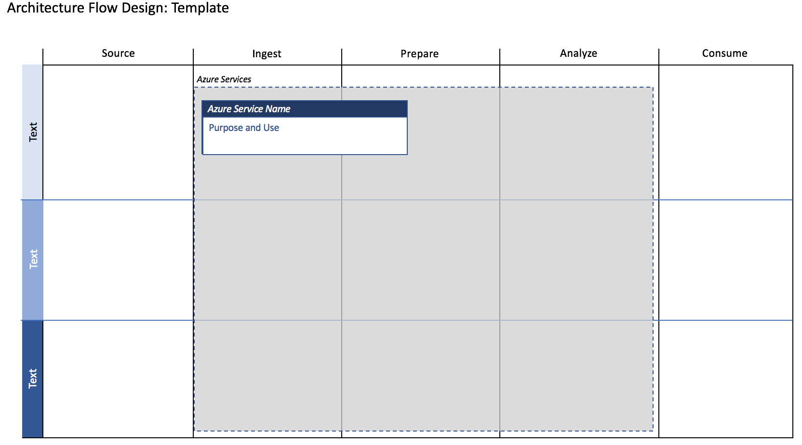

ABOUT THIS COURSE
Solution overview and course goals
Anomaly detection is used to identify unusual patterns (also called Outliers) within a set of data. This data can be historical or real-time, and anomaly detection has applications in business (contextual anomalies), Information Technology (collective anomalies), Healthcare (multiple methods), Financial fraud detection (point anomalies), and many other domains and applications.
In this course you will learn:
Before taking this course
This course uses a series of Jupyter Notebooks, or you can take the course using Visual Studio Code, or Visual Studio (Community Edition 2017 or higher is acceptable). You must also have a Microsoft Azure account, and you must be able to create assets in that account.
TODO: For other pre-requisites, see this resource.
This course uses a complete solution with a common industry scenario to introduce you to anomaly detection using the Microsoft Artificial Intelligence platform. You can extrapolate from this example to a scenario that best fits the problem you are trying to solve.
TODO: Scenario Name
TODO: Decide and frame out the type and level of solution we want to provide

 Applying Anomaly Detection
Applying Anomaly DetectionUsing the knowledge from this course in other scenarios
TODO: Explain how to extrapolate these specific concepts, procedures and technologies to another scenario
Using what you have learned here, there are other resources available for more applications of Anomaly Detection: